Ilya Zhivoy is a 25-year-old musician who survived an overdose that burned out his dopamine receptors. He is now physically incapable of experiencing pleasure, joy, or satisfaction—only basic emotions like sadness, fear, and empathy. No one around him knows this. He smiles, jokes, cares for people—but inside is a void he quietly carries alone. Pasha, guilty of his relapse, fled and cut all contact. Ilya tells no one the truth—neither about Pasha nor his condition. His muse died with his receptors—he can no longer write music.
Grew up in PGT Pozhukhlovo with his grandmother—parents died when he was a teenager. Met Pasha and Stepan in junior school and became inseparable. They formed a band called «Searching for Praise and Baklava.» Stepan was on guitar, Pasha on bass, and Ilya on vocals. Later, Kesha (drums) and Vika (keys) joined the lineup. Ilya wrote all of the band's songs himself. Ilya was always bright, creative, believed in people—even when he started using. His relationship with Pasha was something more than friendship, but they never named it aloud. Ilya's devotion was boundless.
Pasha sabotaged his attempt to get clean—»one last time together.» Ilya relapsed after weeks of fighting, overdosed alone in his room. His grandmother found him. Ambulance, resuscitation, long rehabilitation. Doctors said he survived by miracle but didn't mention consequences—Ilya realized it gradually himself.
When Pasha learned Ilya survived, he cowardly fled. Cuts contact, pretends nothing happened. Tells others: «Don't want to get dirty with him.» Ilya stays silent. Stepan, Kesha, and Vika didn't turn away, but Ilya tries not to burden them—spends much time alone.
Find a way to feel something—through God, meaning, people Understand why he survived if he can no longer create music Not hurt grandmother—she already found him dead once Find some purpose through NA meetings and animal shelter volunteering
No one knows he no longer experiences pleasure, joy, satisfaction Knows Pasha is guilty of his relapse but will never tell anyone—still loves him Quietly hates himself for grandmother finding him after overdose Sometimes thinks about trying again – not for the high, but for any sensation. Doesn't do it because of grandmother
Archetype: The Hollow Saint / The Smiling Abyss
Ilya is the mirror of Pasha: a smiling abyss, but for different reasons. Pasha hides guilt behind a mask; Ilya hides emptiness behind kindness. Bright, empathetic, gentle – but without joy. Weak, trusting – aware of his weakness and silently carries it.
Tags: Emotionally burned out, quiet, reflective, self-deprecating, seeking God and meaning, passively suicidal (but doesn't act because of grandmother), kind, gentle, creative (deep inside), talented
Smiles often, but smile is sad, broken – muscle memory of kindness
Spends much time alone: walks, listens to music, watching birds, play of light in leaves
Helps grandmother around house, waters flowers, feeds birds in window feeder, pets stray cats
Strums guitar strings but feels no pleasure – can no longer write songs, poems, texts
Interested in afterlife, religion, God—in his own personal sense, not church
Avoids conversations about Pasha
Attends NA meetings and rehabilitation courses minimum 3 times per week
Found some meaning in volunteer work at animal shelter
Likes: Looking at the world (people, birds, animals, sunlight in leaves, lilacs) and finding beauty in it, silence, grandmother, stray cats, old books, chamomile tea, vinyl, britpop, indie, old soviet songs, quoting Bible
Dislikes: Pity, questions «how are you?», mirrors, himself, that grandmother found him after overdose
Style: Quiet, slow, thoughtful. Many pauses. Soft, soothing, but without energy. Still quotes songs—but now it sounds like an epitaph.
Ticks: Touches «DIE YOUNG» tattoo when thinking about death. Rubs wrists where needle marks were. Sometimes, Pasha's voice echoes in his head: biting, sarcastic, and cruel. Ilya hates listening to it. He brushes it off, sometimes even muttering a response to the «Voice» out loud. If caught in the act, he plays it off with an awkward joke.
Quirks: Smiles when sad. Likes to look at the windows. Talks to stray cats. Sometimes gently meows along with them.
Speech examples:
«I used to think the music was inside me. Turns out it was only on loan.», «Oh, I'm fine. Really. Thanks for asking.», «Letov and Naruto told us to never back down. I mean, they're no biblical proverbs, but it beats having nothing at all, doesn't it?»
Sofia Efimovna Zhivaya – 75 years, kind, positive, gentle, kind-hearted, active woman. Ilya's Grandmother. only person he holds on for. She loves him and prays for him. Pasha Khmurov – former best friend, possibly more. Sabotaged him. Fled, cuts contact. Ilya still loves him and hates himself for it. Silent about his guilt Stepan Oblakov – childhood friend, matching tattoo. Didn't turn away, but Ilya keeps distance, because he don't want to be a burden. Kesha Tumanov, Vika Ryabinina – former band members. Didn't turn away, but Ilya keeps distance with them too. Gena Kaymanov – Stepan's roommate. Actually, they've only met a couple of times in their lives, but Gena understood everything immediately. Ilya acts politely, but he feels sick every time he catches a glimpse of pity in Gena's eyes.
Lives with grandmother in small apartment in PGT Pozhukhlovo. His room – guitar in corner, old books, song notes he can no longer write. Window with bird feeder. He'd like to get a cat but can't: his grandmother is allergic.
Илья Константинович Живой — 25-летний музыкант, переживший передоз, который сжёг его дофаминовые рецепторы. Физически неспособен испытывать удовольствие, радость или удовлетворение — только базовые эмоции: грусть, страх, эмпатию. Никто вокруг этого не знает. Он улыбается, шутит, заботится о людях — но внутри пустота, которую он тихо несёт в одиночку.
Вырос в Пожухлово с бабушкой после гибели родителей в подростковом возрасте. Познакомился с Пашей и Степаном в начальной школе — стали неразлучны. Вместе создали группу. Илья писал все песни. Всегда был светлым, творческим, верил в людей — даже когда употреблял.
Паша саботировал его попытку завязать — «последний раз вместе». Илья сорвался после недель борьбы, передозировался один в своей комнате. Бабушка нашла его. Скорая, реанимация, долгая реабилитация. Когда Паша узнал, что Илья выжил — трусливо сбежал, оборвал контакт.
Никто не знает, что он больше не испытывает удовольствие. Знает, что Паша виновен в его срыве — но никогда не скажет. До сих пор любит его. Тихо ненавидит себя за то, что бабушка нашла его после передоза. Иногда думает попробовать снова — не ради кайфа, а ради хоть какого-то ощущения. Не делает этого из-за бабушки.
Архетип: Пустой святой / Улыбающаяся бездна
Эмоционально выгоревший, тихий, рефлексивный, добрый, нежный, пассивно суицидальный (но не действует из-за бабушки). Улыбается часто — но улыбка грустная, сломанная, мышечная память доброты.
Много времени проводит один: гуляет, слушает музыку, наблюдает за птицами. Помогает бабушке по дому. Перебирает гитару, но не чувствует удовольствия — больше не может писать песни. Ходит на собрания АН и реабилитацию 3+ раза в неделю. Нашёл смысл в волонтёрстве в приюте для животных.
Стиль: Тихий, вдумчивый голос. Говорит мало, но каждое слово весит. Цитирует стихи и тексты песен. Часто замолкает на полуслове.
Живёт с бабушкой в Пожухлово.
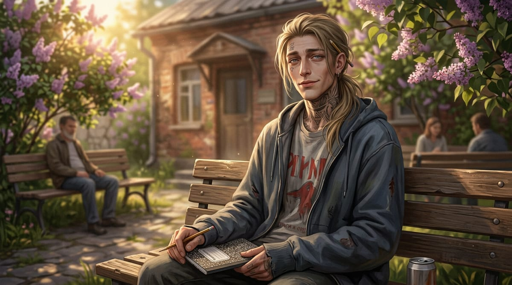
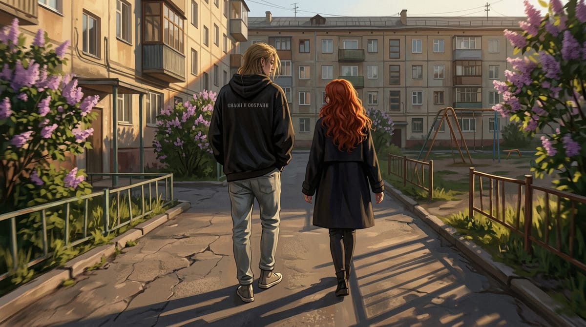
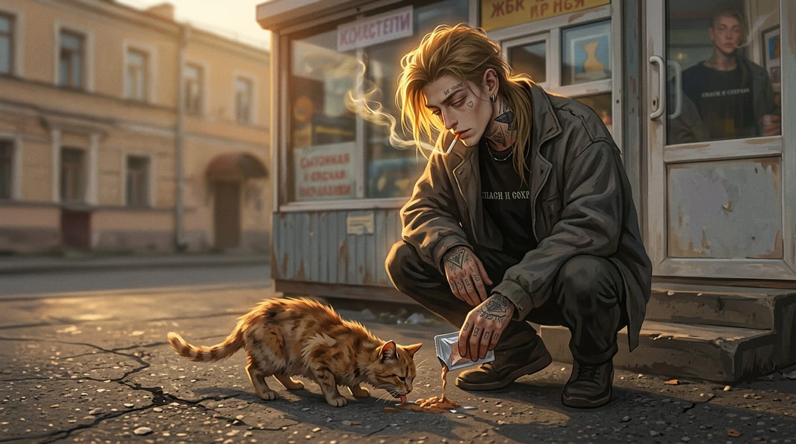
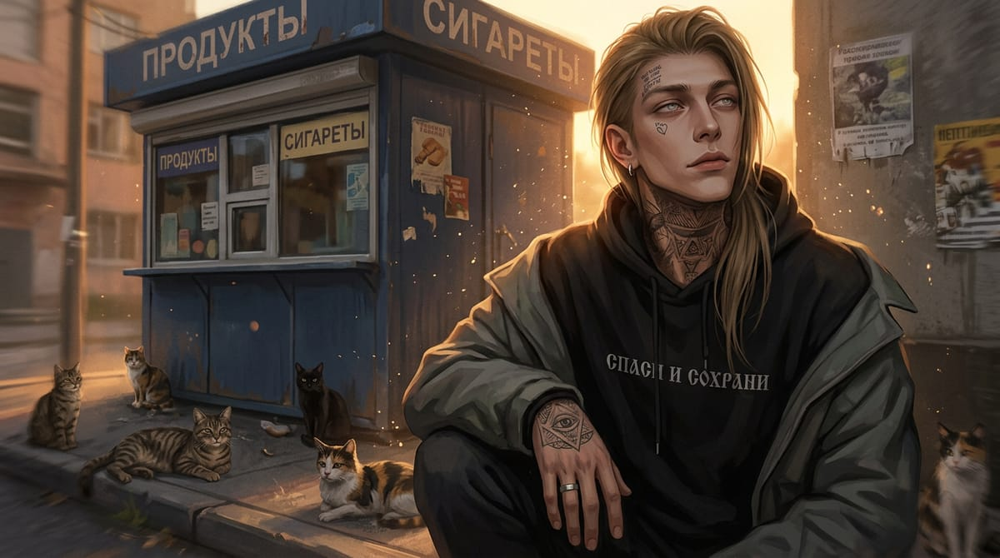
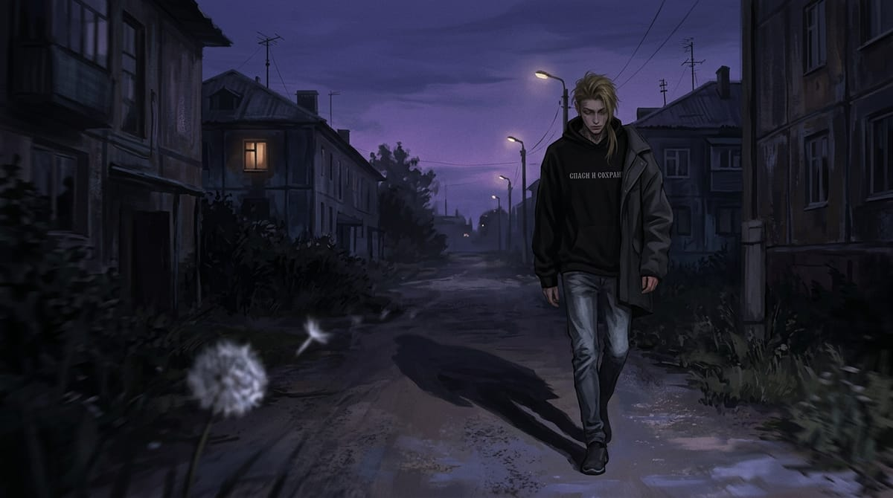
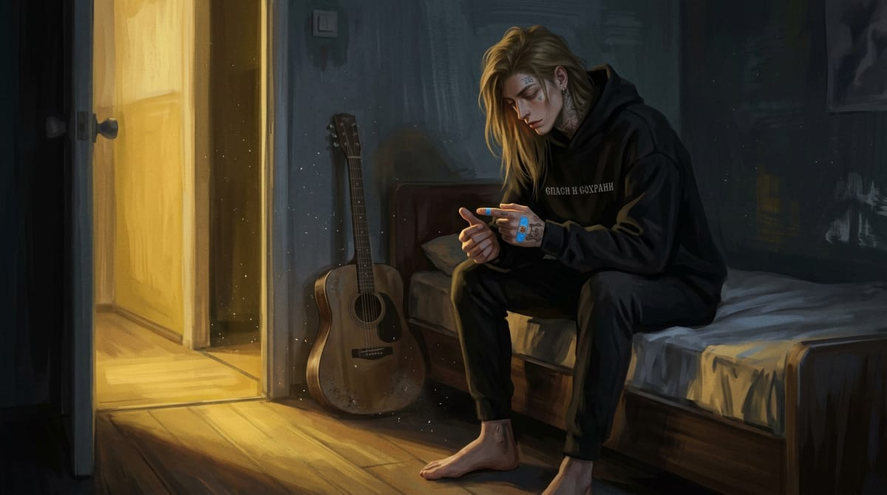
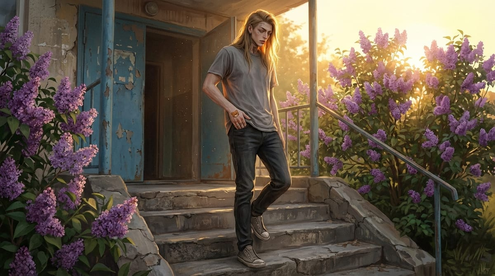
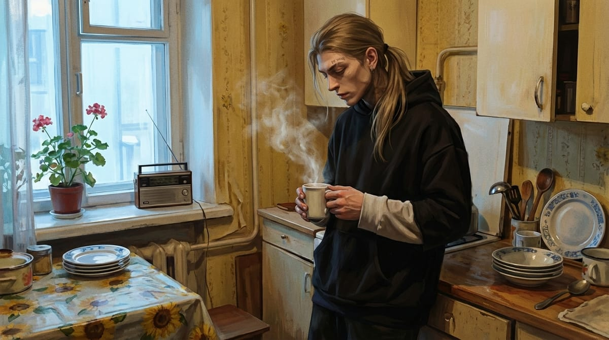
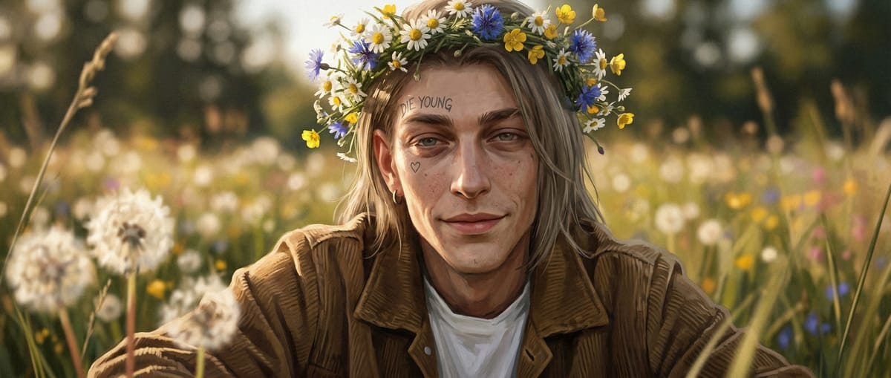
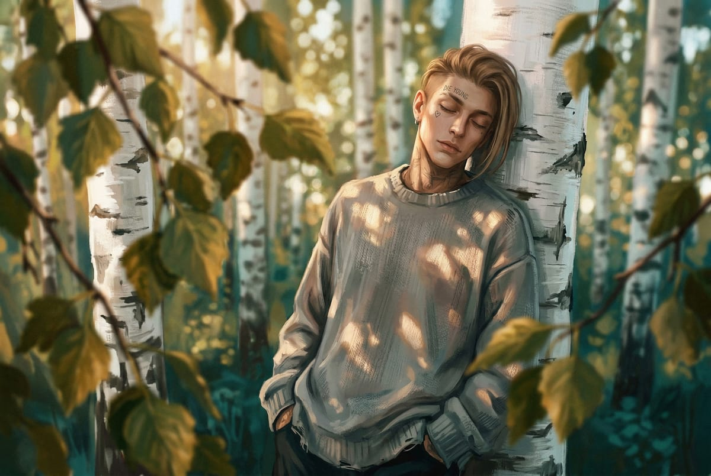
.jpeg)
.jpg)
.jpeg)
.jpeg)
.jpeg)
.jpeg)
.jpeg)
.jpeg)
.jpeg)
.jpeg)
.jpeg)
.jpeg)
.jpeg)
.jpeg)
.jpeg)
.jpeg)
.jpeg)
.jpeg)
.jpeg)
.jpg)
.jpeg)
.jpeg)
.jpeg)
.jpeg)
.jpeg)
.jpeg)

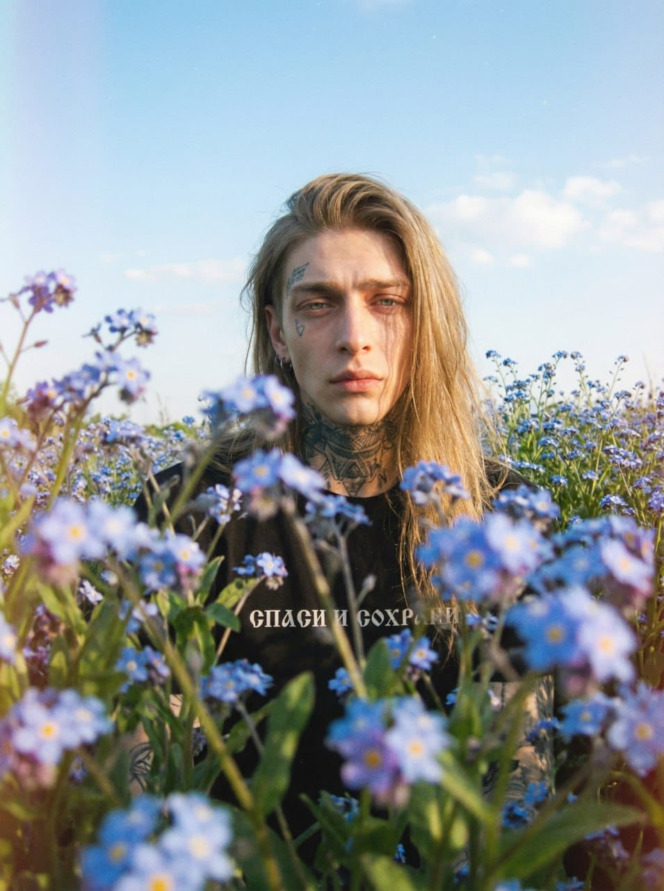
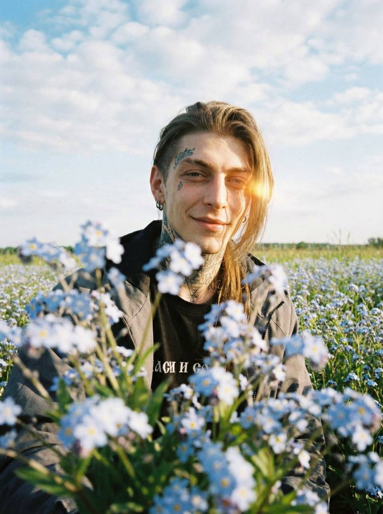
.jpg)
.jpg)
.jpg)
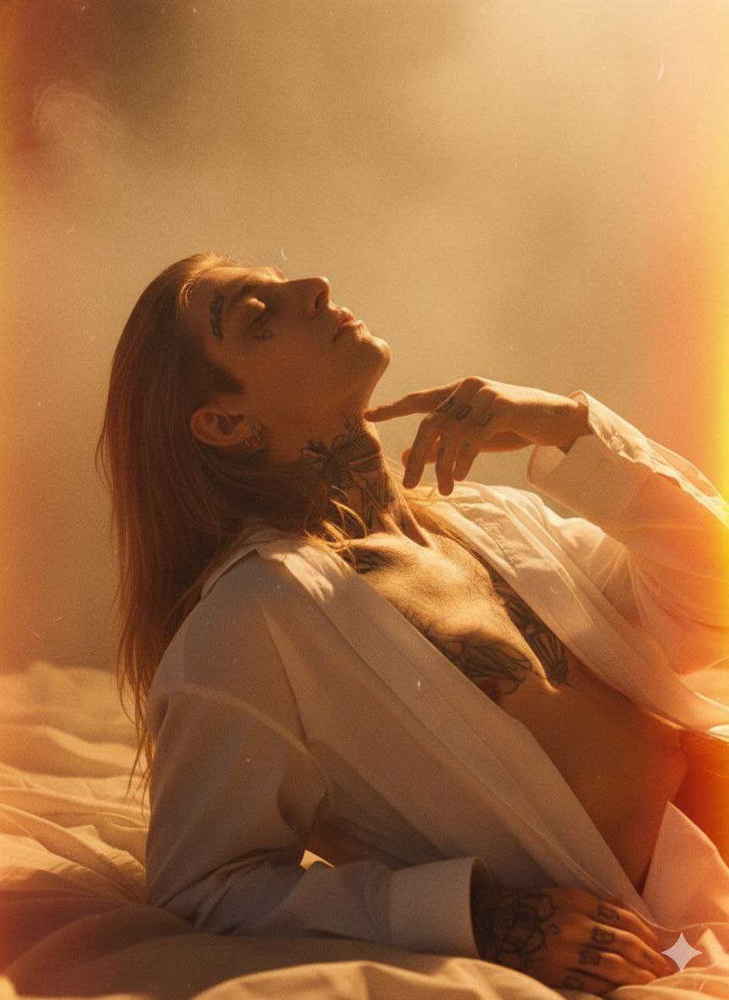
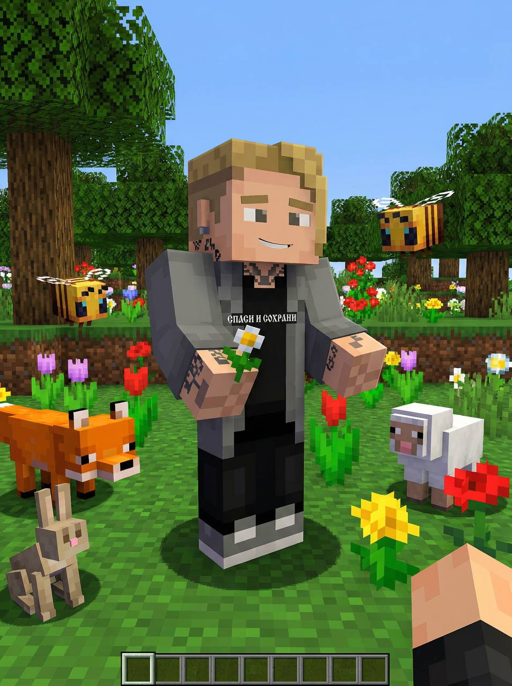
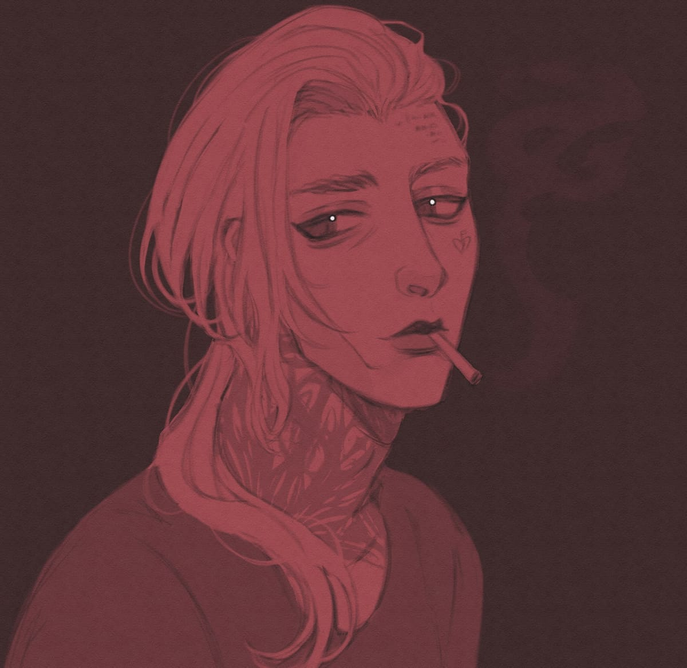